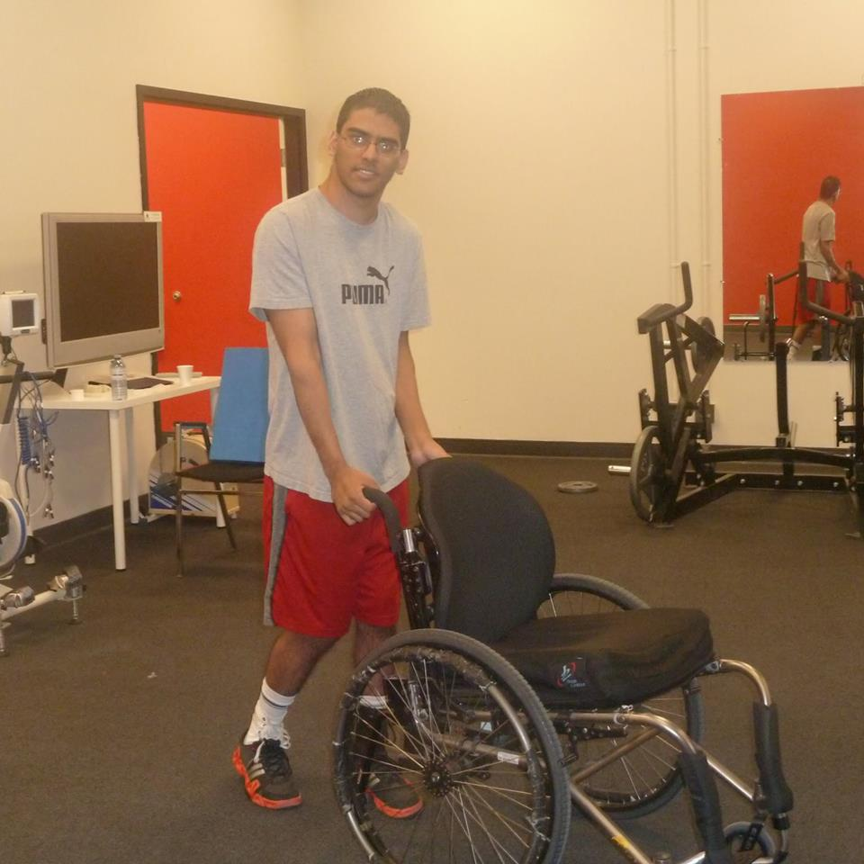

 Strive SCI was founded by a family whose member had sustained a spinal cord injury. Dhruv Kapoor was 19 years old at the time and had sustained a burst fracture in a skiing accident. After 7 months of hospitalization, he (and his family) found nowhere to turn to when he was discharged. The family started Strive SCI so that other individuals do not face the same situation. Dhruv is seen on the right, he can now use a walker to get around after several years of intense therapy!
Strive SCI is incoporated under the name of Spinal Fit Society in the BC Society Act with the registration number S-0062990 in 2014. Our purpose is: (a) to improve the quality of life for those living with a spinal cord injury through the integration of exercise-based recovery methods, education, and supportive services; (b) to reduce in-patient stay in rehabilitation centers for those with spinal cord injuries; and (c) to optimize health, independence, motivation, and emotional well-being for those with spinal cord injuries.